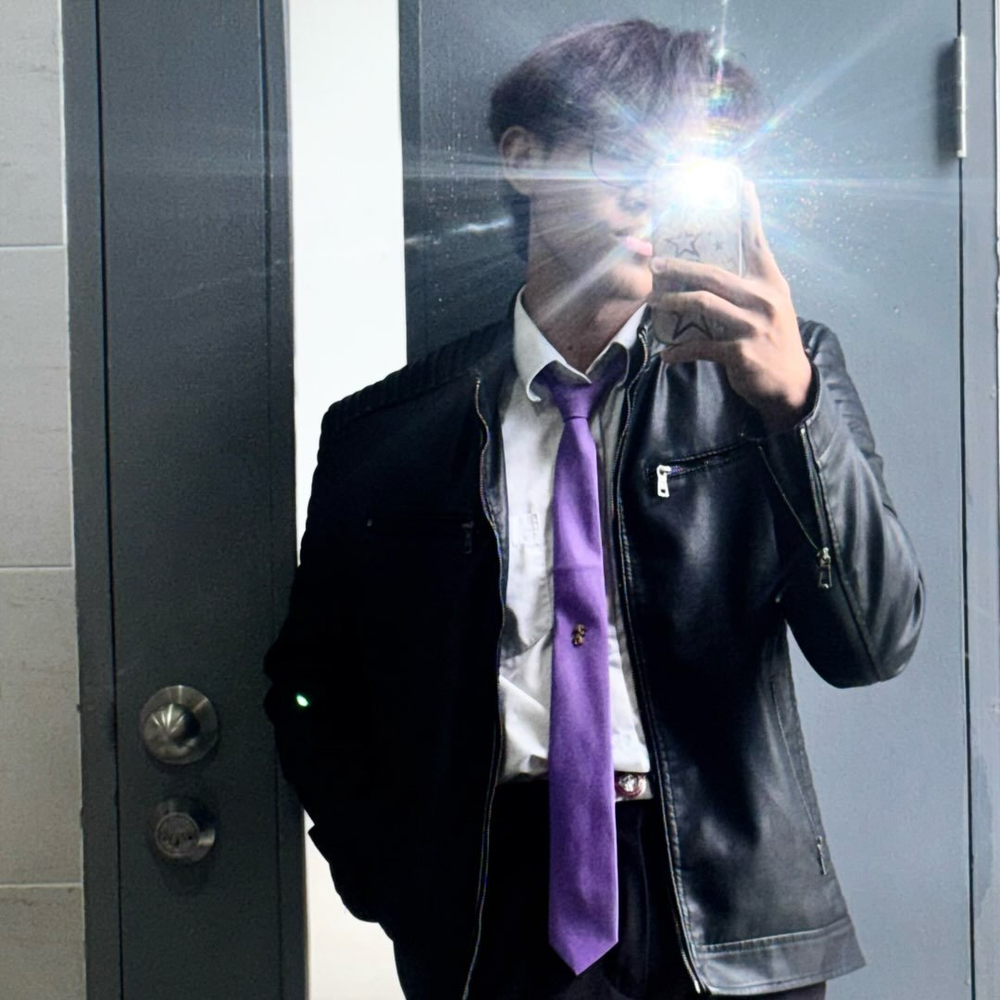

Personal Info
Name: Supachok Jonglaeng
Nickname: Name
Location: Chiang Mai
HELLO, I'M
FUTURE PROJECT MANAGER • PRODUCT PLANNER • TECHNICAL PROJECT BUILDER
ผมสนใจสายงาน Project Management เพราะชอบเปลี่ยนไอเดียให้กลายเป็นแผนงานที่ชัดเจน จัดลำดับงาน ประสานงานกับทีม และผลักดันโปรเจกต์จากแนวคิดไปสู่ต้นแบบที่ใช้งานได้จริง

ศุภโชค จองแหลง
ABOUT ME
Name: Supachok Jonglaeng
Nickname: Name
Location: Chiang Mai
Project Planning
Scrum / Agile
WBS / CBS / Gantt
Arduino / ESP32
Leadership
Teamwork
Communication
Problem Solving
Project Management
Product Planning
Robotics
IoT Systems
MY JOURNEY
เริ่มจากการทำโปรเจกต์เทคโนโลยีเล็ก ๆ และฝึกแก้ปัญหาด้วยตัวเอง
ทดลองทำงานด้าน Arduino, ESP32, IoT, Sensor และระบบต้นแบบ
เริ่มสนใจ Product Backlog, Scrum, MVP, WBS และ Gantt Chart
ตั้งเป้าเป็น Project Manager ที่เข้าใจทั้งคน งาน และเทคโนโลยี
PROJECTS
หุ่นยนต์ช่วยขนของสำหรับผู้สูงอายุ เน้นการใช้งานจริง ความสามารถในการรับน้ำหนัก และการติดตามผู้ใช้แบบอัตโนมัติ
วางแผนแนวคิด กำหนดทิศทางต้นแบบ วิเคราะห์ความต้องการ และเชื่อมงานเทคนิคกับเป้าหมายโครงการ
Tech: Project Planning, Robotics, Prototype
แนวคิดค้นหาร้านอาหารจากวัตถุดิบ มี OCR สแกนเมนู แปลภาษา และแจ้งเตือนวัตถุดิบที่สนใจ
จัดทำ Product Backlog, Scrum, Roadmap, WBS, Gantt Chart และ Business Model
Tech: Scrum, MVP, OCR, Roadmap
ระบบตรวจวัดอุณหภูมิและความชื้นด้วย ESP32/ESP8266, DHT, LCD I2C และ Wi-Fi
ทดสอบระบบ แก้ปัญหา และจัดทำเอกสารด้านเทคนิคให้เข้าใจง่าย
Tech: ESP32, DHT, LCD I2C, Wi-Fi
ต้นแบบเกม 2D มีระบบเคลื่อนที่ แอนิเมชัน การยิง Hitbox ศัตรู และกล้องติดตาม
แบ่งฟีเจอร์เป็นงานย่อย แก้บั๊กทีละขั้น และทดสอบระบบแบบ Iteration
Tech: Godot, GDScript, Debugging
SKILLS
Task breakdown, timeline, roadmap
Sprint, backlog, review process
WBS, CBS, Gantt, report
MVP, user problem, prioritization
Arduino, ESP32, sensors
Presentation, teamwork, leadership
GOALS
ทำงานในสาย Project Management และดูแลโปรเจกต์เทคโนโลยีที่ใช้งานได้จริง
พัฒนาทักษะ Digital Industry Integration และเข้าใจทั้งธุรกิจกับเทคโนโลยี
ทำพอร์ตให้มีผลงานจริง อธิบายบทบาท ผลลัพธ์ และกระบวนการทำงานได้ชัดเจน
AWARDS & ACHIEVEMENTS
เข้าร่วมการแข่งขันสร้างต้นแบบภายใน 40 ชั่วโมง และฝึกการทำงานเป็นทีมภายใต้เวลาจำกัด
ทำคะแนนด้าน Programming ได้โดดเด่น และนำพื้นฐานไปต่อยอดกับงาน Project Management
โปรเจกต์หุ่นยนต์ช่วยขนของที่นำเสนอแนวคิดเทคโนโลยีเพื่อช่วยเหลือผู้สูงอายุ
CONTACT ME
สนใจโอกาสด้าน Project Management, Product Planning, Robotics, IoT และการทำต้นแบบทางเทคนิค